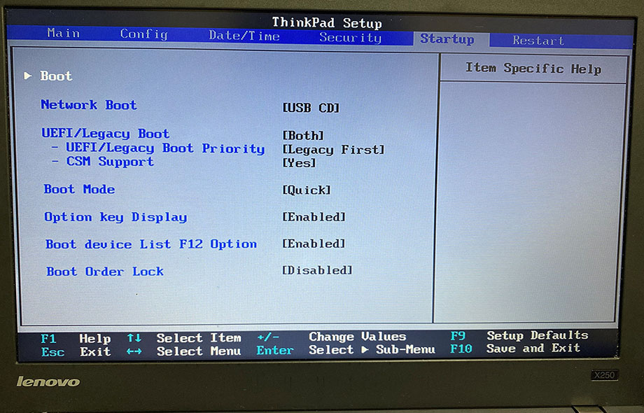
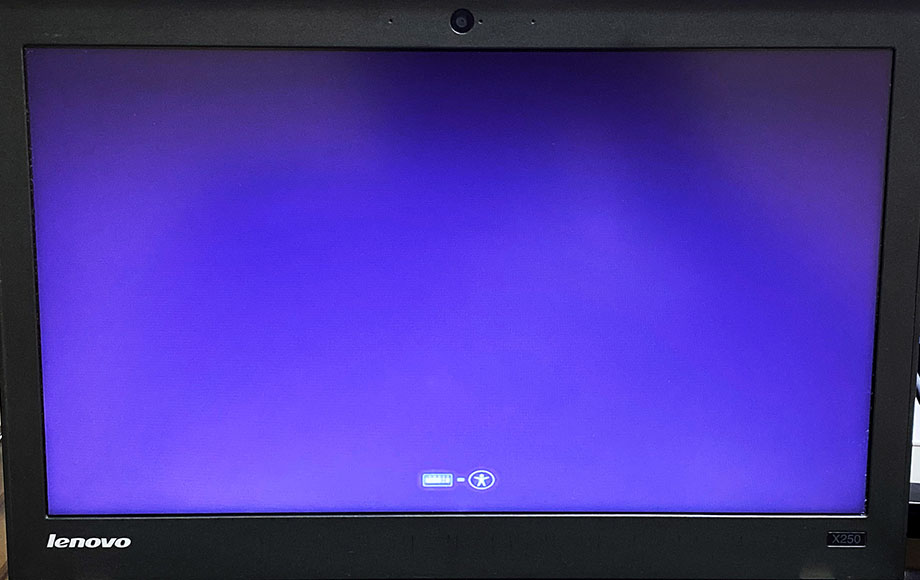
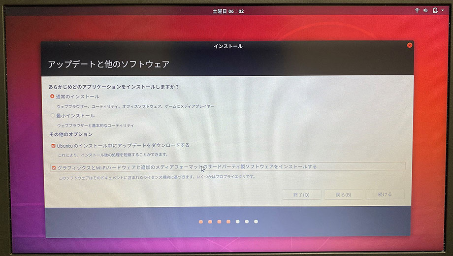
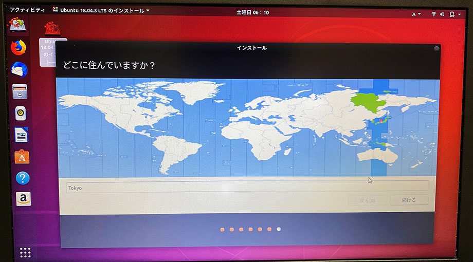

ThinkPad X250 に載せた空の SSD に、ライブ USB メモリを使って Ubuntu をインストールする
Linux 専用機を作るべく、ThinkPad X250 を購入。内蔵 HDD を SSD に換装し、「Rufus」を使って「Ubuntu Desktop 18.04.3 LTS 日本語 Remix」のイメージを USB メモリに書き込んだ。
今回はこの続きで、ライブ USB メモリを使って Ubuntu のインストールを行っていく。
目次
BIOS でブート順を変更しておく
換装した空の SSD よりも先に、USB メモリを読み込んでブートさせたいので、BIOS でブート順序を変更しておこう。
ThinkPad の電源を入れたらすぐに F1 キーを数回押下し、BIOS 画面に入る。
BIOS 画面に入ったら、「Startup」→「Boot」と進み、「Boot Priority Order」画面に入る。ココで「+」キーや「-」キーを使って、ブート順を変更する。



USB メモリを挿した状態でこの画面に入ると、「USB Flash Disk」とかいう表示になっている項目があると思うので、コレを上部に寄せておき、SSD より先に読み込むようにしておく。
SSD は「ATA HDD0 【メーカ名や製品名】」といった項目で表示されていると思うので、コレは下の方に寄せておく。
並び替えが終わったら F10 キーを押下し、設定を保存して BIOS を終了する。

USB メモリからブートする
ブート順を変更して再起動すると、挿入しているライブ USB メモリから優先的にブートされる。



このように画面が進んでいく。「Ubuntu を試す」を選択すると、USB メモリだけで Ubuntu が動作する。ファイルなどは保存されないので、あくまで試用、という感じ。
「インストール」を選択するとインストールウィザードが始まるが、その前に設定を確認するため、ひとまず「Ubuntu を試す」を選択する。
デスクトップが表示されたら、左上の「アクティビティ」を選択し、検索窓に「gnome-disk」と入力、ヒットしたアプリアイコンを選択する。

内蔵 SSD や USB メモリのデバイス情報が表示されるので、内蔵 SSD のデバイスを確認しておく。ココでは /dev/sda であることが分かる。
コレが確認できたらアプリを閉じ、デスクトップ上のアイコンをクリックする。先程と同じ二択の画面が開くので、「インストール」を選択する。
「インストール」を選択してウィザードが始まると、最初にキーボードレイアウトを質問される。自分の ThinkPad X250 は英字配列なので、US キーボードを選択する。コレは言語設定とは直接関係しない。
- 自分は「日本語 Remix」イメージを使用しているので若干手順が異なるかもしれない。通常のイメージだとキーボードレイアウトの前に言語を問われる画面があるかもしれない
続いて、Wi-Fi への接続画面が出てくる。インストール時に追加で必要なパッケージをダウンロードしたり、インストール直後のシステムアップデートに使えたりするので、Wi-Fi 接続をしておくと良いだろう。


続いて「アップデートと他のソフトウェア」画面に移動する。ココでは、「グラフィックスと Wi-Fi ハードウェアと追加のメディアフォーマットのサードパーティ製ソフトウェアをインストールする」にチェックを入れておくと良い。

次に「インストールの種類」画面が出る。まっさらな内蔵 SSD を装着しているので、「ディスクを削除して Ubuntu をインストール」を選択する。
次のような警告ダイアログが出るので、書き込み先のデバイスが、先程確認した内蔵 SSD のデバイス sda であることを確認して進む。

インストール作業が始まる。この間もウィザードは若干続く。時刻設定のために「どこに住んでいますか？」を設定する。日本在住なら Tokyo で良いだろう。

「あなたの情報を入力してください」では、デフォルトのユーザ名とパスワードを設定する。ユーザ名は小文字のみ。パスワードは弱いパスワードでも設定できなくはない。

インストールはそこまで時間はかからない。気楽に待つ。

(↑ USB メモリを繋いでこのように作業している)
インストールが終わったら、再起動するか問われる。
再起動ではなく、一旦電源を切ってやり、USB メモリを抜いて、BIOS で再度ブート順を SSD 有線に変更してやると良いだろう。
USB メモリを抜き、SSD を読み込んで起動するようにしたら、めでたく Ubuntu が開くことだろう。
「設定」アプリで様子を見てみる。

自分はどのマシンでも「Yosemite4」の壁紙を使っているので、早速変更。

うぉー、ついに Ubuntu 専用マシンが爆誕した。
ということで以上。電源ボタンを押すと Ubuntu が起動する ThinkPad X250 ラップトップが出来上がった。
コレからどんどん使い込んで改造していくので、設定周りのノウハウは随時記事にしていこうと思う。